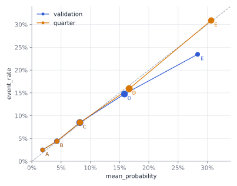

8. 校准与等级#
评分卡将用于贷款定价、设定额度并计入损失准备，因此它的 PD 不仅要能排序，还必须与随后出现的违约率相符。本章把 PD 归入主标尺的各个等级，在验证样本上逐级检验，并分析检验结果说明了什么； 校准 介绍了每种检验。
前面各章的代码
>>> import numpy as np
>>> import pandas as pd
>>> from kivi.datasets import make_applications
>>> from kivi.reject_inference import fuzzy_augmentation
>>> from kivi.selection import logistic_regression, stepwise
>>> from kivi.spec import fit_spec
>>> applications = make_applications(n_applicants=40000, rng=0)
>>> months = pd.period_range("2024-01", periods=12, freq="M")
>>> applications["month"] = months[np.arange(40000) * 12 // 40000]
>>> eligible = applications[~applications["policy_decline"]]
>>> accepts = eligible[eligible["approved"]]
>>> development = accepts[accepts["month"] <= "2024-09"]
>>> validation = accepts[accepts["month"] >= "2024-10"]
>>> rejects = eligible[~eligible["approved"] & (eligible["month"] <= "2024-09")]
>>> features = ["age", "income", "debt_to_income", "inquiries", "housing", "employment", "incumbent_pd"]
>>> method = {column: "monotonic" for column in ["age", "income", "debt_to_income", "incumbent_pd"]}
>>> method["employment"] = "chimerge"
>>> bins = {"inquiries": [-np.inf, 0, 1, 2, np.inf], "incumbent_pd": 8}
>>> spec = fit_spec(development[features], development["target"], method=method, bins=bins)
>>> selected = stepwise(spec.woe_transform(development), development["target"])
>>> accepts_model = logistic_regression(spec.woe_transform(development)[selected], development["target"])
>>> def predict(model, frame):
... slopes = model["coef"].drop("intercept")
... log_odds = model.loc["intercept", "coef"] + spec.woe_transform(frame)[slopes.index] @ slopes
... return 1 / (1 + np.exp(-log_odds))
>>> inferred = fuzzy_augmentation(predict(accepts_model, rejects), factor=1.5)
>>> frame = pd.concat([development[features], rejects.loc[inferred.index, features]])
>>> target = pd.concat([development["target"], inferred["target"]])
>>> weights = pd.concat([pd.Series(1.0, index=development.index), inferred["weight"]])
>>> model = logistic_regression(spec.woe_transform(frame)[selected], target, weights=weights)
构建主标尺#
主标尺让贷款机构所有模型给出的 PD 具有统一的含义。 master_scale() 根据每个等级的 PD 构建主标尺，这里有五个等级，每一级的 PD 是前一级的两倍，等级边界位于相邻 PD 在对数刻度上的中点：
>>> from kivi.calibration import assign_grades, binomial_test, calibration_table, fit_grade_pd
>>> from kivi.calibration import herfindahl_index, hosmer_lemeshow, jeffreys_test, master_scale, platt_fit
>>> master = master_scale(np.geomspace(0.02, 0.32, 5), labels=list("ABCDE"))
>>> master.round(4)
lower probability upper
grade
A 0.0000 0.02 0.0283
B 0.0283 0.04 0.0566
C 0.0566 0.08 0.1131
D 0.1131 0.16 0.2263
E 0.2263 0.32 1.0000
逐级检验#
assign_grades() 按 PD 为验证样本的每个申请人分配等级， calibration_table() 把每个等级的违约率与其平均 PD 相比较。 jeffreys_test() 检验某个等级的违约是否多于主标尺 PD 的预测，因此 p 值很小说明该等级低估了风险。 binomial_test() 用精确二项分布，针对该等级的平均 PD 检验同样的问题：
>>> probability = predict(model, validation)
>>> y = validation["target"]
>>> grades = assign_grades(probability, master)
>>> table = calibration_table(grades, y, probability).join(master["probability"])
>>> table["jeffreys"] = jeffreys_test(table["event"], table["total"], table["probability"])
>>> table["binomial"] = binomial_test(table["event"], table["total"], table["mean_probability"])
>>> table[["total", "event", "event_rate", "mean_probability", "jeffreys", "binomial"]].round(3)
total event event_rate mean_probability jeffreys binomial
bin
A 679 17 0.025 0.018 0.172 0.126
B 1135 50 0.044 0.043 0.239 0.443
C 2225 189 0.085 0.082 0.194 0.328
D 2047 302 0.148 0.158 0.939 0.916
E 699 164 0.235 0.283 1.000 0.998
没有哪个等级低估风险：所有 p 值都很大。A 到 D 级与各自的 PD 非常吻合，但 E 级的 699 个获批申请人中有 164 个违约，违约率 23.5%，而平均 PD 为 28.3%。两种检验都是单侧的，不会标出偏高的 PD。 hosmer_lemeshow() 检验两个方向的偏差，这里按开发样本的 PD 十分位分组：
>>> from kivi.binning import bin_edges
>>> deciles = pd.cut(probability, bin_edges(predict(model, development), bins=10))
>>> by_decile = calibration_table(deciles, y, probability)
>>> statistic, p_value = hosmer_lemeshow(by_decile["event"], by_decile["total"], by_decile["mean_probability"])
>>> print(f"H = {statistic:.2f}, p = {p_value:.3f}")
H = 17.02, p = 0.030
分析偏差#
platt_fit() 把结果对 PD 的对数几率做回归。斜率为 1、截距为 0 表示 PD 在该样本上是校准的：
>>> slope, shift = platt_fit(np.log(probability / (1 - probability)), y)
>>> print(f"slope = {slope:.3f}, intercept = {shift:.3f}")
slope = 0.831, intercept = -0.386
斜率小于 1 说明 PD 的离散程度大于结果。 platt_predict() 显示这一拟合会把三个 PD 变成多少：
>>> from kivi.calibration import platt_predict
>>> example = np.array([0.02, 0.1, 0.3])
>>> platt_predict(np.log(example / (1 - example)), slope, shift).round(3)
array([0.026, 0.099, 0.252])
拟合把 2% 的 PD 略微调高，10% 基本不变，30% 则降到 25%：PD 越高，对获批申请人风险的高估就越多。这正是拒绝推断有意造成的结果。模型现在预测的是全部合格申请人，而 E 级中的获批申请人比 PD 相同的被拒申请人更好，后者是供应商依据征信数据拒绝的。若用 Platt 缩放或保序回归把 PD 重新校准到获批申请人上，就会抵消拒绝推断，因此项目保留现有的 PD。
fit_grade_pd() 显示仅凭获批申请人会给各等级什么样的 PD：对其违约率按等级序号做对数线性拟合：
>>> fit_grade_pd(table["event"], table["total"]).round(4)
bin
A 0.0258
B 0.0459
C 0.0815
D 0.1447
E 0.2571
dtype: float64
模拟核对
在 10 月至 12 月的全部合格申请人中，无论是否获批，每个等级的违约率都接近其平均 PD：
>>> quarter = eligible[eligible["month"] >= "2024-10"]
>>> quarter_pd = predict(model, quarter)
>>> everyone = calibration_table(assign_grades(quarter_pd, master), quarter["target"], quarter_pd)
>>> everyone.round(3)
total event event_rate mean_probability
bin
A 679 17 0.025 0.018
B 1135 50 0.044 0.043
C 2234 190 0.085 0.082
D 2989 476 0.159 0.166
E 2204 681 0.309 0.307

各等级违约率与平均 PD 的对比。E 级的获批申请人违约少于其 PD 的预测；而在全部合格申请人中（只有模拟数据才能揭示），各等级都落在对角线上。#
检查集中度#
主标尺应当把申请人分散到各个等级，而不是都集中在一个等级。 herfindahl_index() 衡量计数的集中度，均匀分布时为 0，全部集中在一个等级时为 1：
>>> print(f"{herfindahl_index(table['total'], normalize=True):.3f}")
0.059
获批申请人在五个等级中的标准化指数为 0.06，远谈不上集中。